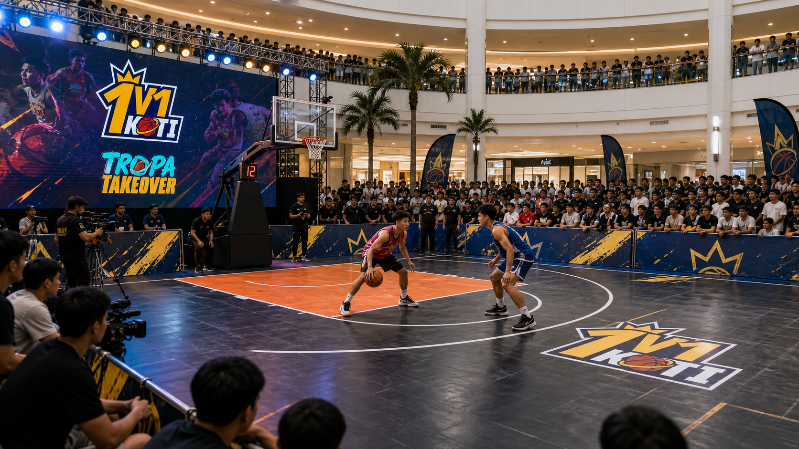
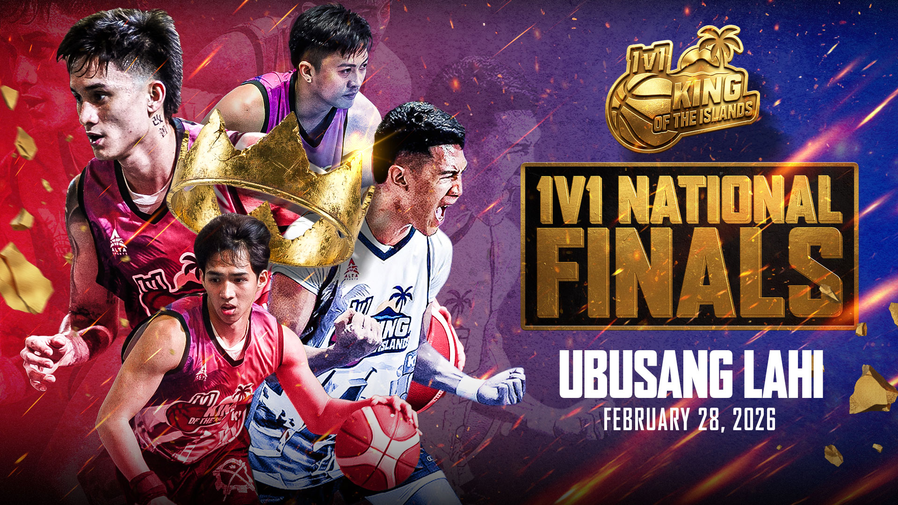
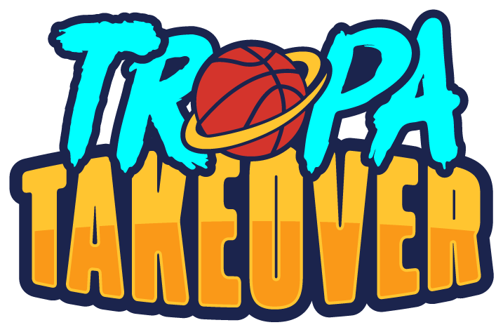

Season 1 reached 128 barangays. Season 2 is already at 50 barangays and still moving.
Season 2: Tropa Takeover
KOTI 1V1 Basketball Tournament
The city-versus-city street basketball platform turning local pride, raw talent, and sponsor energy into a national sports property.
Barangay Courts
1V1
Mall Arenas
Finals
National Stage
Barangay Coverage178+S1 128 + S2 50 and counting
Players10K+grassroots athletes activated
Verified Views12.9M+cross-platform exposure
KOTI Portal
Less talk. More proof points.
KOTI should feel like a live tournament product: next stop, latest kings, creator media, city coverage, and sponsor entry points in one fast mobile flow.
Proof of Heat
Coverage, players, and exposure are the real scoreboard.
The stronger metric is not how many event days were produced. It is how many barangays were reached, how many players entered the system, and how much audience attention the platform created.
A growing player pool across qualifiers, city stops, regional stages, and open pipelines.
Cross-platform views from verified season reporting, with National Finals alone reported above 10M views.
Government-unit cooperation plus Coach C and creator distribution strengthens each city launch.
Philippines Coverage
From NCR heat to an island-wide road.
The KOTI story is simple: every city has a player who believes he can take the crown. The platform gives that belief a court, a crowd, and a media stage.
Luzon / NCR
MandaluyongCaloocanValenzuelaManilaTaguigPaterosMarikinaLas PinasQuezon CityPasaySan JuanPasigCaintaPangasinanCaviteBulacanPampanga
Visayas Pipeline
IloiloBacolodBoracayDumagueteTalisayCebuMandaueLapu-LapuToledoBogoTagbilaranTacloban
Mindanao Road
Cagayan de OroZamboangaGeneral SantosDavaoregional qualifiersfuture city kings
#HaringLungsod turns every city stop into a home-court identity.
#TropaTakeover brings crews, rivals, fans, and content into the same story.
Barangay courts build authenticity; malls and finals create sponsor-scale visibility.
Culture Wall
The background is bigger than basketball.
KOTI is built on Filipino street basketball culture: crews arriving together, barangay pride, city rivalries, mall crowds, and one-on-one pressure that turns unknown players into local names.
Media Wall
Show the heat before explaining the pitch.
This section is built to become a living FB/TikTok wall: court photos, champion moments, Coach C content, government activations, and player reels.
Mall-Ready Activation
Retail traffic becomes courtside energy.
KOTI can move from a neighborhood court to an atrium stage without losing the street feel. That makes the property useful for malls, city partners, consumer brands, and media partners.
- SM MOA Context
- North Regional scale with 100K+ daily foot traffic context.
- SM Seaside Context
- South Regional scale with 60K+ daily foot traffic context.
- BGC Finals Context
- National Finals stage with 70K+ daily foot traffic context.

Story Cases
Not just statistics. Moments people can follow.
Prince Almond Yambao became a named proof point for local hero storytelling.
A clutch three-point story became the type of recap content fans share after the game.
The National Finals gave grassroots players a real championship environment.
KOTI can convert walk-by audiences into live spectators and online clips.

Origin Story
The first proof: local players can carry a national sports brand.
Season 1 proved the engine: community court access, real elimination pressure, regional stakes, livestream attention, and a finals stage worthy of sponsors.
4.76MNational Finals campaign views
1.245MFinals day livestream impressions
780KFinals day livestream viewers
1,430peak concurrent viewers
Future Road
The Takeover becomes a repeatable city franchise.
The next version of KOTI is a national circuit: city qualifiers, regional storylines, media recaps, sponsor activations, and a final stage with heroes fans already know.
City Tour Schedule
Haring Lungsod. Every city gets a court.
| City | Region | Match Date | Venue | Status |
|---|
Results & Champions
Every city has a king. KOTI gives them the court.
Champion
Champion
Champion
Champion
Champion
Champion
Partnership Opportunities
Four ways brands can enter the takeover.
Title Sponsor
Own the season, the city route, and the recurring content package.
Venue Partner
Convert foot traffic into dwell time, crowd energy, and shareable live moments.
Media Partner
Build player stories, live cuts, city recaps, and highlight packages.
City Partner
Give local athletes a visible platform tied to civic pride and community activation.

Join KOTI
Partner with the next city takeover.
KOTI is ready for sponsors, venue partners, city partners, content collaborators, and players who want to own the court.